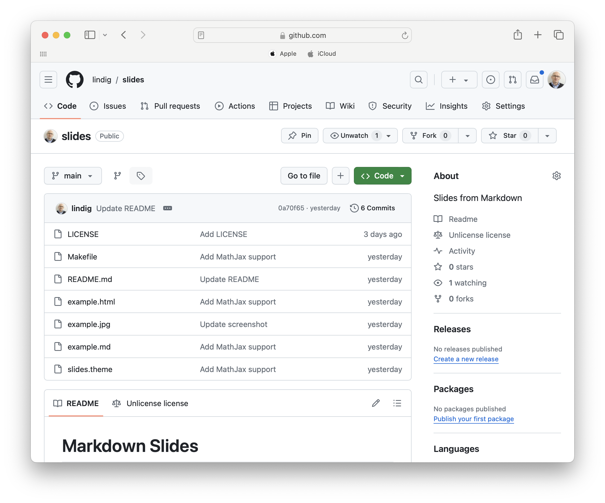

code and links Cloud Software GroupOnly when the tide goes out do you discover who’s been swimming naked. – Warren Buffet
$$ n! = \cases{ 1 & n = 0\cr (n-1)! \times n & n > 0} $$
let rec fac = function
| n when n <= 0 -> 1
| n -> fac (n-1) * n
| Year | Event |
|---|---|
| 2010 | WCH Karapiro, New Zealand |
| 2011 | WCH Bled, Slovenia |
| 2012 | 2012 WSJCH Plovdiv, Bulgaria |
| 2013 | WCH Chungju, Korea |
npm and web frontend frameworks)Discount is a Markdown library and processor written in C that can be installed from a package manager.
Besides markdown it installs a theme command that can be used to
inject HTML generated from a markdown file into a template.
theme -f slides.theme example.md
example.md contains the contentslide.theme provides the stylingOverlong slides are not a problem
## Math
Typesetting math is supported by [MathJax]. We might have to
be careful about substiutions made by `theme`.
$$
\sigma = \sqrt\frac{\sum{(X-\mu)^2}}{N}
$$
[MathJax]: https://www.mathjax.org
Get it at github.com/lindig/slides
